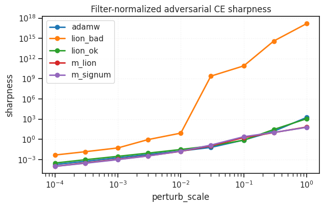
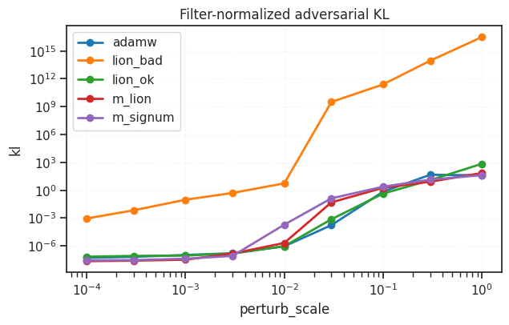
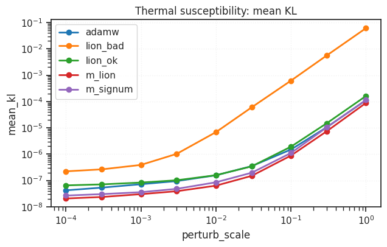
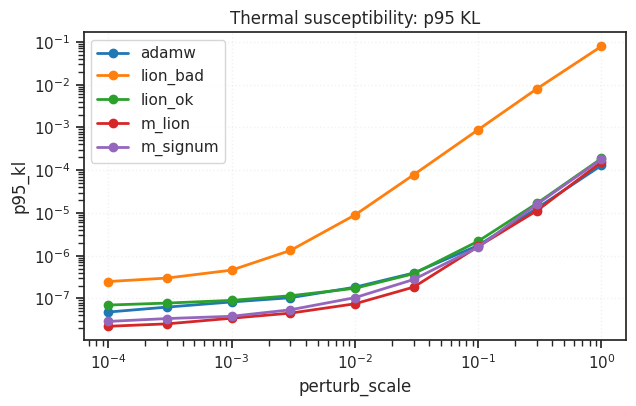
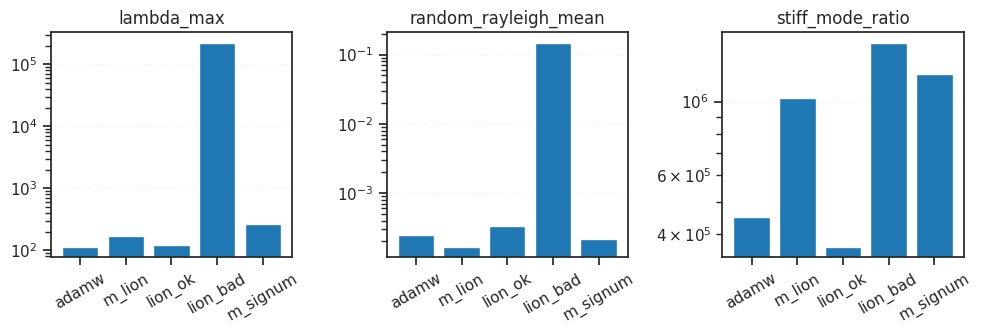

(1) Invariant curvature analysis: MassiveLion vs. Lion#
device = cuda:0
Interpretation: MassiveLion vs lion_bad vs lion_ok#
The invariant/function-space probes now separate the three runs cleanly.
The key new fact is that lion_bad had negative curvature coupling because \(\beta_1 > \beta_2\). That makes its pathology much less mysterious: the optimizer dynamics were effectively amplifying the wrong curvature response rather than damping it. The diagnostics show exactly that kind of unstable, stiff solution.
Normal-Mode Spectrum#
The Fisher/KL normal-mode spectrum is the most mechanistic summary. It treats the local predictive KL as an elastic energy,
so eigenvalues of the filter-normalized Fisher/KL matrix behave like spring constants.
lion_bad has a dramatically larger lambda_max and random_rayleigh_mean than both m_lion and lion_ok. This means it is not just sharp in one unlucky direction; its functional stiffness scale is globally much higher. Its stiff_mode_ratio is also large, indicating strong anisotropy: rare directions are extremely stiff relative to typical directions.
By contrast, lion_ok has normal-mode stiffness comparable to or lower than m_lion, though its typical random stiffness is slightly higher. This supports the idea that Lion itself is not necessarily pathological; the bad behavior came from the negative-coupling regime.
Thermal Susceptibility#
The thermal probes measure typical response to random filter-normalized perturbations. This is a finite-temperature / basin-volume view: instead of asking for the worst direction, we ask how much nearby normalized volume changes the function.
Both mean_KL and p95_KL show:
So lion_bad is thermally more susceptible across all perturbation scales. Random perturbations already change its predictive distribution much more than they change the others. lion_ok and m_lion remain close, with m_lion usually slightly more stable.
Adversarial KL#
The adversarial KL probe is the zero-temperature, worst-case version of functional sensitivity. It asks: how much can an adversary change the model’s predictions under a scale-aware perturbation?
Here the separation is extreme. lion_bad has much larger KL even at tiny perturbation scales, then catastrophically explodes at moderate scales. This is the clearest signature of unstable stiff modes. lion_ok and m_lion track each other closely at small scales, only rising at larger perturbations.
This means the previous “Lion is functionally brittle” conclusion should be refined:
The pathological Lion run was functionally brittle because it was in the negative curvature-coupling regime, not because all Lion-like fits must be brittle.
Adversarial CE Sharpness#
The CE sharpness plot tells the same story in supervised-loss space. lion_bad becomes explosively sharp, with loss increases spanning many orders of magnitude. lion_ok and m_lion remain well behaved and close together until larger perturbation scales.
At the largest scales, both m_lion and lion_ok eventually become vulnerable, but this is less informative because large perturbations leave the local regime. The small-to-moderate perturbation range is the important one, and there lion_bad is the clear outlier.
Conclusion#
The converging interpretation is:
lion_bad is not merely a high-norm or unlucky Lion solution. It is dynamically pathological because (\beta_1 > \beta_2) gives negative curvature coupling, producing extremely stiff and unstable functional modes.
The invariant probes all agree:
lion_badhas enormous worst-case functional sensitivity.lion_badhas much higher typical thermal susceptibility.lion_badhas a vastly larger Fisher/KL stiffness scale.lion_okis mechanically much healthier and often close tom_lion.m_lionremains the most consistently stable or near-stable model across typical perturbation probes.
Mechanistically, MassiveLion behaves like a curvature-damped system that reaches a stable functional basin. lion_ok is a reasonable Lion solution without the negative-coupling instability. lion_bad behaves like an anti-damped or wrong-sign curvature-coupled system: it lands in a basin with hidden stiff modes that explode under normalized adversarial perturbations.
# display_probe_interpretation();
adv_ce: Filter-normalized adversarial CE sharpness
Question. How much can an adversary increase supervised loss using a scale-aware perturbation of the weights?
Mechanics view. Worst-case elastic energy under a normalized displacement. The filter normalization changes coordinates from raw weights to relative per-filter strain, so large parameter norms do not automatically look flatter or sharper.
Thermo view. This is a zero-temperature / adversarial probe: it finds the most damaging local direction instead of averaging over typical thermal kicks.
Large values mean. A nearby scale-aware displacement can strongly increase CE loss. The basin has a brittle direction in label-loss space.
Small values mean. The supervised loss is locally stable to worst-case normalized weight perturbations at this perturb_scale.
Primary readouts. sharpness, relative_sharpness, sharp_acc
Caveat. CE can explode when logits become confidently wrong. Interpret small perturb_scale values before accuracy collapses most heavily.
adv_kl: Filter-normalized adversarial function-space KL
Question. How much can an adversary change the predictive distribution using a scale-aware weight perturbation?
Mechanics view. For small perturbations, KL(p_theta || p_theta+delta) is roughly 0.5 * delta^T F delta, so this is a direct stiffness measurement of the learned function in normalized coordinates.
Thermo view. This is still a zero-temperature probe, but the energy is information-geometric rather than label CE.
Large values mean. The input-output map has a stiff functional direction. The model can change predictions substantially without a large normalized parameter displacement.
Small values mean. The function is locally stable; predictions are insensitive to worst-case normalized perturbations at this scale.
Primary readouts. kl, pert_acc, pert_loss
Caveat. When KL is near numerical floor, ratios can look dramatic but the qualitative ordering matters more than exact factors.
thermal: Filter-normalized thermal susceptibility
Question. How much does the function fluctuate under random isotropic normalized weight noise?
Mechanics view. Measures typical susceptibility rather than the stiffest mode. Think of random small kicks to a mechanical system and observe the average response.
Thermo view. Finite-temperature basin-volume probe. Mean and tail KL estimate how much nearby normalized volume preserves the function.
Large values mean. A substantial fraction of nearby normalized parameter volume changes the function or loss.
Small values mean. Typical nearby perturbations are harmless. If adversarial probes are large but thermal probes are small, the brittleness is anisotropic and concentrated in rare directions.
Primary readouts. mean_kl, p95_kl, mean_loss_increase, worst_acc
Caveat. Random directions in very high dimension often miss narrow stiff subspaces, so use this alongside adversarial probes.
normal_modes: Filter-normalized Fisher/KL normal modes
Question. What are the stiffest functional modes, and how anisotropic is the local geometry?
Mechanics view. Treat S F S as a stiffness matrix, where F is the predictive Fisher/KL Hessian and S maps normalized coordinates to real weights. Eigenvectors are normal modes; eigenvalues are spring constants.
Thermo view. The top eigenvalue gives the stiffest low-temperature mode, while random Rayleigh probes estimate typical thermal stiffness.
Large values mean. Large lambda_max means a very stiff functional direction. A large stiff_mode_ratio means a highly anisotropic basin with rare sharp modes and many softer directions.
Small values mean. The local function-space stiffness scale is lower, or less anisotropic if stiff_mode_ratio is also small.
Primary readouts. lambda_max, top_eigs, random_rayleigh_mean, stiff_mode_ratio
Caveat. Lanczos estimates depend on max_batches, random initialization, and number of steps. Compare runs under identical settings.
from gra.diagnostics.invariant_curvature_metrics import (
DEFAULT_PERTURB_SCALES,
display_probe_interpretation,
filter_normalized_adversarial_sharpness,
filter_normalized_adversarial_kl,
filter_normalized_thermal_susceptibility,
filter_normalized_fisher_normal_modes,
plot_scale_sweep,
plot_normal_mode_bars,
compare_to_reference,
)
import pandas as pd
from gra.utils.dataset import make_dataloader
device_idx = 0
device = f'cuda:{device_idx}'
print(f"device: {device} ——— host: {os.uname().nodename}")
device: cuda:0 ——— host: chewie
step 0 — load stuff#
load runs#
%%time
from gra.experiments.common.checkpointing import resolve_resume_source, load_checkpoint
run_paths = {
"adamw": "pal-lab/GRA-CIFAR10/tcan6k5g",
"m_lion": "pal-lab/GRA-CIFAR10/ikft1odq",
"lion_ok": "pal-lab/GRA-CIFAR10/h9vl6ugr",
"lion_bad": "pal-lab/GRA-CIFAR10/5ljlbsbj",
"m_signum": "pal-lab/GRA-CIFAR10/umh5vvwk",
}
sources = {k: resolve_resume_source(v) for k, v in run_paths.items()}
ckpts = {
k: load_checkpoint(src.checkpoint_path, map_location="cpu")
for k, src in sources.items()
}
models = {k: ckpt_to_vision_model(ch) for k, ch in ckpts.items()}
wandb: WARNING The anonymous setting has no effect and will be removed in a future version.
wandb: ERROR Failed to detect the name of this notebook. You can set it manually with the WANDB_NOTEBOOK_NAME environment variable to enable code saving.
wandb: [wandb.Api()] Loaded credentials for https://api.wandb.ai from /home/hadi/.netrc.
CPU times: user 1.81 s, sys: 379 ms, total: 2.19 s
Wall time: 6.05 s
Load data#
train_loader, val_loader = make_dataloader(
dataset="CIFAR10",
batch_size=256,
device=device,
)
loader = val_loader
step 1 — run the big loop#
%%time
shared = {
"device": device,
"max_batches": 20,
"perturb_scales": [1e-4, 3e-4, 1e-3, 3e-3, 1e-2, 3e-2, 1e-1, 3e-1, 1],
}
adv_ce_rows = []
adv_kl_rows = []
thermal_rows = []
normal_mode_rows = []
for label, model in tqdm(models.items()):
for perturb_scale in shared["perturb_scales"]:
out = filter_normalized_adversarial_sharpness(
model,
loader,
device=shared["device"],
perturb_scale=perturb_scale,
ascent_steps=10,
max_batches=shared["max_batches"],
)
adv_ce_rows.append({"label": label, **out})
out = filter_normalized_adversarial_kl(
model,
loader,
device=shared["device"],
perturb_scale=perturb_scale,
ascent_steps=10,
max_batches=shared["max_batches"],
)
adv_kl_rows.append({"label": label, **out})
out = filter_normalized_thermal_susceptibility(
model,
loader,
device=shared["device"],
perturb_scale=perturb_scale,
samples=30,
max_batches=shared["max_batches"],
)
thermal_rows.append({"label": label, **out})
out = filter_normalized_fisher_normal_modes(
model,
loader,
device=shared["device"],
max_batches=10,
lanczos_steps=12,
random_probes=8,
)
normal_mode_rows.append({"label": label, **out})
adv_ce_df = pd.DataFrame(adv_ce_rows)
adv_kl_df = pd.DataFrame(adv_kl_rows)
thermal_df = pd.DataFrame(thermal_rows)
normal_modes_df = pd.DataFrame(normal_mode_rows)
CPU times: user 9min 31s, sys: 5min 29s, total: 15min
Wall time: 13min 43s
step 2 — inspect / visualize#
plots#
plot_scale_sweep(adv_ce_df, "sharpness", title="Filter-normalized adversarial CE sharpness")
plot_scale_sweep(adv_kl_df, "kl", title="Filter-normalized adversarial KL")
plot_scale_sweep(thermal_df, "mean_kl", title="Thermal susceptibility: mean KL")
plot_scale_sweep(thermal_df, "p95_kl", title="Thermal susceptibility: p95 KL")
plot_normal_mode_bars(normal_modes_df);





relative to m_lion#
# Useful ratio tables against MassiveLion.
adv_ce_vs_mlion = compare_to_reference(adv_ce_df, "sharpness", reference_label="m_lion")
adv_kl_vs_mlion = compare_to_reference(adv_kl_df, "kl", reference_label="m_lion")
thermal_vs_mlion = compare_to_reference(thermal_df, "mean_kl", reference_label="m_lion")
display(adv_ce_vs_mlion)
display(adv_kl_vs_mlion)
display(thermal_vs_mlion)
| label | perturb_scale | adamw | lion_bad | lion_ok | m_lion | m_signum | adamw_over_m_lion | adamw_minus_m_lion | lion_bad_over_m_lion | lion_bad_minus_m_lion | lion_ok_over_m_lion | lion_ok_minus_m_lion | m_lion_over_m_lion | m_lion_minus_m_lion | m_signum_over_m_lion | m_signum_minus_m_lion |
|---|---|---|---|---|---|---|---|---|---|---|---|---|---|---|---|---|
| 0 | 0.0001 | 0.000176 | 4.546112e-03 | 0.000294 | 0.000096 | 0.000094 | 1.841193 | 0.000080 | 4.752760e+01 | 4.450460e-03 | 3.074294 | 0.000198 | 1.0 | 0.0 | 0.982046 | -0.000002 |
| 1 | 0.0003 | 0.000520 | 1.399356e-02 | 0.000903 | 0.000304 | 0.000271 | 1.711423 | 0.000216 | 4.609007e+01 | 1.368995e-02 | 2.972866 | 0.000599 | 1.0 | 0.0 | 0.893743 | -0.000032 |
| 2 | 0.0010 | 0.001762 | 5.155075e-02 | 0.002915 | 0.001044 | 0.000943 | 1.687286 | 0.000718 | 4.937516e+01 | 5.050669e-02 | 2.792168 | 0.001871 | 1.0 | 0.0 | 0.903212 | -0.000101 |
| 3 | 0.0030 | 0.005325 | 8.870783e-01 | 0.008715 | 0.003455 | 0.003252 | 1.541313 | 0.001870 | 2.567747e+02 | 8.836236e-01 | 2.522617 | 0.005260 | 1.0 | 0.0 | 0.941275 | -0.000203 |
| 4 | 0.0100 | 0.018215 | 8.229956e+00 | 0.029991 | 0.016080 | 0.016934 | 1.132807 | 0.002136 | 5.118187e+02 | 8.213876e+00 | 1.865106 | 0.013911 | 1.0 | 0.0 | 1.053115 | 0.000854 |
| 5 | 0.0300 | 0.061029 | 2.403107e+09 | 0.103021 | 0.106189 | 0.134735 | 0.574718 | -0.045160 | 2.263042e+10 | 2.403107e+09 | 0.970167 | -0.003168 | 1.0 | 0.0 | 1.268822 | 0.028546 |
| 6 | 0.1000 | 0.772530 | 8.027951e+10 | 0.725524 | 1.793478 | 2.407045 | 0.430744 | -1.020948 | 4.476190e+10 | 8.027951e+10 | 0.404534 | -1.067955 | 1.0 | 0.0 | 1.342110 | 0.613567 |
| 7 | 0.3000 | 15.191350 | 3.941699e+14 | 28.263963 | 9.707215 | 10.285832 | 1.564955 | 5.484135 | 4.060587e+13 | 3.941699e+14 | 2.911645 | 18.556748 | 1.0 | 0.0 | 1.059607 | 0.578618 |
| 8 | 1.0000 | 1755.821259 | 1.544401e+17 | 1124.333954 | 66.348792 | 58.822911 | 26.463500 | 1689.472467 | 2.327701e+15 | 1.544401e+17 | 16.945809 | 1057.985162 | 1.0 | 0.0 | 0.886571 | -7.525880 |
| label | perturb_scale | adamw | lion_bad | lion_ok | m_lion | m_signum | adamw_over_m_lion | adamw_minus_m_lion | lion_bad_over_m_lion | lion_bad_minus_m_lion | lion_ok_over_m_lion | lion_ok_minus_m_lion | m_lion_over_m_lion | m_lion_minus_m_lion | m_signum_over_m_lion | m_signum_minus_m_lion |
|---|---|---|---|---|---|---|---|---|---|---|---|---|---|---|---|---|
| 0 | 0.0001 | 5.172320e-08 | 9.000959e-04 | 6.872920e-08 | 2.264386e-08 | 2.692305e-08 | 2.284204 | 2.907934e-08 | 3.975010e+04 | 9.000733e-04 | 3.035224 | 4.608533e-08 | 1.0 | 0.0 | 1.188978 | 4.279182e-09 |
| 1 | 0.0003 | 6.614619e-08 | 6.907446e-03 | 8.481446e-08 | 2.586776e-08 | 2.994188e-08 | 2.557090 | 4.027843e-08 | 2.670292e+05 | 6.907420e-03 | 3.278772 | 5.894671e-08 | 1.0 | 0.0 | 1.157498 | 4.074121e-09 |
| 2 | 0.0010 | 1.060503e-07 | 9.380548e-02 | 9.080281e-08 | 3.272992e-08 | 4.148977e-08 | 3.240165 | 7.332042e-08 | 2.866047e+06 | 9.380545e-02 | 2.774306 | 5.807289e-08 | 1.0 | 0.0 | 1.267641 | 8.759853e-09 |
| 3 | 0.0030 | 1.617462e-07 | 5.068066e-01 | 1.516202e-07 | 1.523644e-07 | 8.431213e-08 | 1.061575 | 9.381763e-09 | 3.326279e+06 | 5.068064e-01 | 0.995116 | -7.441855e-10 | 1.0 | 0.0 | 0.553358 | -6.805228e-08 |
| 4 | 0.0100 | 9.055109e-07 | 5.485270e+00 | 9.291199e-07 | 2.075474e-06 | 1.945804e-04 | 0.436291 | -1.169963e-06 | 2.642899e+06 | 5.485268e+00 | 0.447666 | -1.146354e-06 | 1.0 | 0.0 | 93.752274 | 1.925050e-04 |
| 5 | 0.0300 | 1.713797e-04 | 3.216989e+09 | 7.484621e-04 | 4.939638e-02 | 1.333180e-01 | 0.003469 | -4.922500e-02 | 6.512600e+10 | 3.216989e+09 | 0.015152 | -4.864792e-02 | 1.0 | 0.0 | 2.698942 | 8.392160e-02 |
| 6 | 0.1000 | 6.929758e-01 | 2.460751e+11 | 4.262021e-01 | 1.812200e+00 | 2.379761e+00 | 0.382395 | -1.119224e+00 | 1.357881e+11 | 2.460751e+11 | 0.235185 | -1.385998e+00 | 1.0 | 0.0 | 1.313189 | 5.675616e-01 |
| 7 | 0.3000 | 4.599975e+01 | 9.008319e+13 | 1.225934e+01 | 8.238544e+00 | 1.377581e+01 | 5.583480 | 3.776120e+01 | 1.093436e+13 | 9.008319e+13 | 1.488046 | 4.020792e+00 | 1.0 | 0.0 | 1.672117 | 5.537266e+00 |
| 8 | 1.0000 | 4.018710e+01 | 3.123029e+16 | 6.968011e+02 | 7.107198e+01 | 4.234771e+01 | 0.565442 | -3.088487e+01 | 4.394177e+14 | 3.123029e+16 | 9.804160 | 6.257291e+02 | 1.0 | 0.0 | 0.595842 | -2.872427e+01 |
| label | perturb_scale | adamw | lion_bad | lion_ok | m_lion | m_signum | adamw_over_m_lion | adamw_minus_m_lion | lion_bad_over_m_lion | lion_bad_minus_m_lion | lion_ok_over_m_lion | lion_ok_minus_m_lion | m_lion_over_m_lion | m_lion_minus_m_lion | m_signum_over_m_lion | m_signum_minus_m_lion |
|---|---|---|---|---|---|---|---|---|---|---|---|---|---|---|---|---|
| 0 | 0.0001 | 4.191967e-08 | 2.213287e-07 | 6.472214e-08 | 2.051926e-08 | 2.654162e-08 | 2.042942 | 2.140041e-08 | 10.786388 | 2.008095e-07 | 3.154213 | 4.420287e-08 | 1.0 | 0.0 | 1.293498 | 6.022359e-09 |
| 1 | 0.0003 | 5.312945e-08 | 2.627388e-07 | 7.058505e-08 | 2.341949e-08 | 3.005750e-08 | 2.268600 | 2.970996e-08 | 11.218810 | 2.393193e-07 | 3.013945 | 4.716556e-08 | 1.0 | 0.0 | 1.283440 | 6.638013e-09 |
| 2 | 0.0010 | 7.162583e-08 | 3.875603e-07 | 8.287261e-08 | 3.001163e-08 | 3.567225e-08 | 2.386602 | 4.161419e-08 | 12.913669 | 3.575487e-07 | 2.761349 | 5.286098e-08 | 1.0 | 0.0 | 1.188614 | 5.660620e-09 |
| 3 | 0.0030 | 9.418854e-08 | 1.020898e-06 | 1.012928e-07 | 3.882890e-08 | 4.775286e-08 | 2.425733 | 5.535965e-08 | 26.292223 | 9.820691e-07 | 2.608695 | 6.246387e-08 | 1.0 | 0.0 | 1.229828 | 8.923966e-09 |
| 4 | 0.0100 | 1.562880e-07 | 6.824071e-06 | 1.576943e-07 | 6.315071e-08 | 8.477863e-08 | 2.474842 | 9.313732e-08 | 108.060089 | 6.760920e-06 | 2.497111 | 9.454359e-08 | 1.0 | 0.0 | 1.342481 | 2.162793e-08 |
| 5 | 0.0300 | 3.484402e-07 | 5.998309e-05 | 3.421170e-07 | 1.490757e-07 | 1.959457e-07 | 2.337338 | 1.993645e-07 | 402.366776 | 5.983402e-05 | 2.294922 | 1.930414e-07 | 1.0 | 0.0 | 1.314404 | 4.687000e-08 |
| 6 | 0.1000 | 1.493251e-06 | 6.181580e-04 | 1.911391e-06 | 8.782868e-07 | 1.101879e-06 | 1.700186 | 6.149638e-07 | 703.822506 | 6.172797e-04 | 2.176272 | 1.033104e-06 | 1.0 | 0.0 | 1.254578 | 2.235926e-07 |
| 7 | 0.3000 | 1.048008e-05 | 5.599122e-03 | 1.487179e-05 | 7.386106e-06 | 1.037903e-05 | 1.418891 | 3.093976e-06 | 758.061354 | 5.591735e-03 | 2.013482 | 7.485685e-06 | 1.0 | 0.0 | 1.405210 | 2.992922e-06 |
| 8 | 1.0000 | 1.119767e-04 | 6.096368e-02 | 1.613533e-04 | 8.807871e-05 | 1.138325e-04 | 1.271326 | 2.389801e-05 | 692.150026 | 6.087560e-02 | 1.831922 | 7.327460e-05 | 1.0 | 0.0 | 1.292396 | 2.575383e-05 |
results df#
display(adv_ce_df)
display(adv_kl_df)
display(thermal_df)
display(normal_modes_df)
| label | perturb_scale | base_loss | base_acc | sharp_loss | sharp_acc | sharpness | relative_sharpness | ascent_steps | max_batches | |
|---|---|---|---|---|---|---|---|---|---|---|
| 0 | adamw | 0.0001 | 0.562457 | 0.910937 | 5.626332e-01 | 0.910937 | 1.761138e-04 | 3.131152e-04 | 10 | 20 |
| 1 | adamw | 0.0003 | 0.562457 | 0.910937 | 5.629767e-01 | 0.910937 | 5.196109e-04 | 9.238233e-04 | 10 | 20 |
| 2 | adamw | 0.0010 | 0.562457 | 0.910937 | 5.642187e-01 | 0.910742 | 1.761632e-03 | 3.132029e-03 | 10 | 20 |
| 3 | adamw | 0.0030 | 0.562457 | 0.910937 | 5.677819e-01 | 0.910547 | 5.324766e-03 | 9.466973e-03 | 10 | 20 |
| 4 | adamw | 0.0100 | 0.562457 | 0.910937 | 5.806724e-01 | 0.909570 | 1.821535e-02 | 3.238531e-02 | 10 | 20 |
| 5 | adamw | 0.0300 | 0.562457 | 0.910937 | 6.234859e-01 | 0.905273 | 6.102880e-02 | 1.085039e-01 | 10 | 20 |
| 6 | adamw | 0.1000 | 0.562457 | 0.910937 | 1.334987e+00 | 0.833984 | 7.725303e-01 | 1.373492e+00 | 10 | 20 |
| 7 | adamw | 0.3000 | 0.562457 | 0.910937 | 1.575381e+01 | 0.150195 | 1.519135e+01 | 2.700890e+01 | 10 | 20 |
| 8 | adamw | 1.0000 | 0.562457 | 0.910937 | 1.756384e+03 | 0.102539 | 1.755821e+03 | 3.121698e+03 | 10 | 20 |
| 9 | m_lion | 0.0001 | 0.255891 | 0.934961 | 2.559868e-01 | 0.935156 | 9.565204e-05 | 3.737998e-04 | 10 | 20 |
| 10 | m_lion | 0.0003 | 0.255891 | 0.934961 | 2.561947e-01 | 0.934961 | 3.036134e-04 | 1.186494e-03 | 10 | 20 |
| 11 | m_lion | 0.0010 | 0.255891 | 0.934961 | 2.569352e-01 | 0.934961 | 1.044063e-03 | 4.080105e-03 | 10 | 20 |
| 12 | m_lion | 0.0030 | 0.255891 | 0.934961 | 2.593458e-01 | 0.932813 | 3.454696e-03 | 1.350065e-02 | 10 | 20 |
| 13 | m_lion | 0.0100 | 0.255891 | 0.934961 | 2.719709e-01 | 0.929297 | 1.607983e-02 | 6.283855e-02 | 10 | 20 |
| 14 | m_lion | 0.0300 | 0.255891 | 0.934961 | 3.620803e-01 | 0.905664 | 1.061892e-01 | 4.149781e-01 | 10 | 20 |
| 15 | m_lion | 0.1000 | 0.255891 | 0.934961 | 2.049370e+00 | 0.549219 | 1.793478e+00 | 7.008757e+00 | 10 | 20 |
| 16 | m_lion | 0.3000 | 0.255891 | 0.934961 | 9.963106e+00 | 0.098828 | 9.707215e+00 | 3.793494e+01 | 10 | 20 |
| 17 | m_lion | 1.0000 | 0.255891 | 0.934961 | 6.660468e+01 | 0.100195 | 6.634879e+01 | 2.592853e+02 | 10 | 20 |
| 18 | lion_ok | 0.0001 | 1.010632 | 0.888672 | 1.010926e+00 | 0.888672 | 2.940625e-04 | 2.909688e-04 | 10 | 20 |
| 19 | lion_ok | 0.0003 | 1.010632 | 0.888672 | 1.011535e+00 | 0.888672 | 9.026021e-04 | 8.931062e-04 | 10 | 20 |
| 20 | lion_ok | 0.0010 | 1.010632 | 0.888672 | 1.013548e+00 | 0.889062 | 2.915198e-03 | 2.884528e-03 | 10 | 20 |
| 21 | lion_ok | 0.0030 | 1.010632 | 0.888672 | 1.019347e+00 | 0.888867 | 8.714876e-03 | 8.623190e-03 | 10 | 20 |
| 22 | lion_ok | 0.0100 | 1.010632 | 0.888672 | 1.040623e+00 | 0.887891 | 2.999057e-02 | 2.967506e-02 | 10 | 20 |
| 23 | lion_ok | 0.0300 | 1.010632 | 0.888672 | 1.113654e+00 | 0.883008 | 1.030213e-01 | 1.019374e-01 | 10 | 20 |
| 24 | lion_ok | 0.1000 | 1.010632 | 0.888672 | 1.736156e+00 | 0.850000 | 7.255239e-01 | 7.178910e-01 | 10 | 20 |
| 25 | lion_ok | 0.3000 | 1.010632 | 0.888672 | 2.927460e+01 | 0.349219 | 2.826396e+01 | 2.796661e+01 | 10 | 20 |
| 26 | lion_ok | 1.0000 | 1.010632 | 0.888672 | 1.125345e+03 | 0.098437 | 1.124334e+03 | 1.112505e+03 | 10 | 20 |
| 27 | lion_bad | 0.0001 | 1.003512 | 0.901758 | 1.008058e+00 | 0.901563 | 4.546112e-03 | 4.530203e-03 | 10 | 20 |
| 28 | lion_bad | 0.0003 | 1.003512 | 0.901758 | 1.017505e+00 | 0.901367 | 1.399356e-02 | 1.394459e-02 | 10 | 20 |
| 29 | lion_bad | 0.0010 | 1.003512 | 0.901758 | 1.055062e+00 | 0.900195 | 5.155075e-02 | 5.137036e-02 | 10 | 20 |
| 30 | lion_bad | 0.0030 | 1.003512 | 0.901758 | 1.890590e+00 | 0.835742 | 8.870783e-01 | 8.839741e-01 | 10 | 20 |
| 31 | lion_bad | 0.0100 | 1.003512 | 0.901758 | 9.233467e+00 | 0.470898 | 8.229956e+00 | 8.201156e+00 | 10 | 20 |
| 32 | lion_bad | 0.0300 | 1.003512 | 0.901758 | 2.403107e+09 | 0.100781 | 2.403107e+09 | 2.394697e+09 | 10 | 20 |
| 33 | lion_bad | 0.1000 | 1.003512 | 0.901758 | 8.027951e+10 | 0.100781 | 8.027951e+10 | 7.999858e+10 | 10 | 20 |
| 34 | lion_bad | 0.3000 | 1.003512 | 0.901758 | 3.941699e+14 | 0.100781 | 3.941699e+14 | 3.927905e+14 | 10 | 20 |
| 35 | lion_bad | 1.0000 | 1.003512 | 0.901758 | 1.544401e+17 | 0.100781 | 1.544401e+17 | 1.538997e+17 | 10 | 20 |
| 36 | m_signum | 0.0001 | 0.249926 | 0.934961 | 2.500203e-01 | 0.934961 | 9.393468e-05 | 3.758494e-04 | 10 | 20 |
| 37 | m_signum | 0.0003 | 0.249926 | 0.934961 | 2.501978e-01 | 0.934766 | 2.713524e-04 | 1.085729e-03 | 10 | 20 |
| 38 | m_signum | 0.0010 | 0.249926 | 0.934961 | 2.508694e-01 | 0.934766 | 9.430096e-04 | 3.773149e-03 | 10 | 20 |
| 39 | m_signum | 0.0030 | 0.249926 | 0.934961 | 2.531782e-01 | 0.933398 | 3.251818e-03 | 1.301110e-02 | 10 | 20 |
| 40 | m_signum | 0.0100 | 0.249926 | 0.934961 | 2.668603e-01 | 0.927344 | 1.693390e-02 | 6.775555e-02 | 10 | 20 |
| 41 | m_signum | 0.0300 | 0.249926 | 0.934961 | 3.846616e-01 | 0.894336 | 1.347352e-01 | 5.390994e-01 | 10 | 20 |
| 42 | m_signum | 0.1000 | 0.249926 | 0.934961 | 2.656972e+00 | 0.434961 | 2.407045e+00 | 9.631017e+00 | 10 | 20 |
| 43 | m_signum | 0.3000 | 0.249926 | 0.934961 | 1.053576e+01 | 0.098437 | 1.028583e+01 | 4.115545e+01 | 10 | 20 |
| 44 | m_signum | 1.0000 | 0.249926 | 0.934961 | 5.907284e+01 | 0.098437 | 5.882291e+01 | 2.353609e+02 | 10 | 20 |
| label | perturb_scale | base_loss | base_acc | pert_loss | pert_acc | kl | ascent_steps | max_batches | |
|---|---|---|---|---|---|---|---|---|---|
| 0 | adamw | 0.0001 | 0.562457 | 0.910937 | 5.624541e-01 | 0.910742 | 5.172320e-08 | 10 | 20 |
| 1 | adamw | 0.0003 | 0.562457 | 0.910937 | 5.624528e-01 | 0.910937 | 6.614619e-08 | 10 | 20 |
| 2 | adamw | 0.0010 | 0.562457 | 0.910937 | 5.624662e-01 | 0.910742 | 1.060503e-07 | 10 | 20 |
| 3 | adamw | 0.0030 | 0.562457 | 0.910937 | 5.624597e-01 | 0.910742 | 1.617462e-07 | 10 | 20 |
| 4 | adamw | 0.0100 | 0.562457 | 0.910937 | 5.624263e-01 | 0.910742 | 9.055109e-07 | 10 | 20 |
| 5 | adamw | 0.0300 | 0.562457 | 0.910937 | 5.621469e-01 | 0.910547 | 1.713797e-04 | 10 | 20 |
| 6 | adamw | 0.1000 | 0.562457 | 0.910937 | 1.161937e+00 | 0.852539 | 6.929758e-01 | 10 | 20 |
| 7 | adamw | 0.3000 | 0.562457 | 0.910937 | 4.613795e+01 | 0.157422 | 4.599975e+01 | 10 | 20 |
| 8 | adamw | 1.0000 | 0.562457 | 0.910937 | 4.096141e+01 | 0.504687 | 4.018710e+01 | 10 | 20 |
| 9 | m_lion | 0.0001 | 0.255891 | 0.934961 | 2.558855e-01 | 0.934961 | 2.264386e-08 | 10 | 20 |
| 10 | m_lion | 0.0003 | 0.255891 | 0.934961 | 2.558947e-01 | 0.934961 | 2.586776e-08 | 10 | 20 |
| 11 | m_lion | 0.0010 | 0.255891 | 0.934961 | 2.558855e-01 | 0.934961 | 3.272992e-08 | 10 | 20 |
| 12 | m_lion | 0.0030 | 0.255891 | 0.934961 | 2.558846e-01 | 0.934961 | 1.523644e-07 | 10 | 20 |
| 13 | m_lion | 0.0100 | 0.255891 | 0.934961 | 2.559719e-01 | 0.934961 | 2.075474e-06 | 10 | 20 |
| 14 | m_lion | 0.0300 | 0.255891 | 0.934961 | 2.873930e-01 | 0.923828 | 4.939638e-02 | 10 | 20 |
| 15 | m_lion | 0.1000 | 0.255891 | 0.934961 | 2.049217e+00 | 0.549805 | 1.812200e+00 | 10 | 20 |
| 16 | m_lion | 0.3000 | 0.255891 | 0.934961 | 8.437926e+00 | 0.098828 | 8.238544e+00 | 10 | 20 |
| 17 | m_lion | 1.0000 | 0.255891 | 0.934961 | 7.137244e+01 | 0.098828 | 7.107198e+01 | 10 | 20 |
| 18 | lion_ok | 0.0001 | 1.010632 | 0.888672 | 1.010646e+00 | 0.888672 | 6.872920e-08 | 10 | 20 |
| 19 | lion_ok | 0.0003 | 1.010632 | 0.888672 | 1.010655e+00 | 0.888672 | 8.481446e-08 | 10 | 20 |
| 20 | lion_ok | 0.0010 | 1.010632 | 0.888672 | 1.010647e+00 | 0.888672 | 9.080281e-08 | 10 | 20 |
| 21 | lion_ok | 0.0030 | 1.010632 | 0.888672 | 1.010641e+00 | 0.888672 | 1.516202e-07 | 10 | 20 |
| 22 | lion_ok | 0.0100 | 1.010632 | 0.888672 | 1.010617e+00 | 0.888672 | 9.291199e-07 | 10 | 20 |
| 23 | lion_ok | 0.0300 | 1.010632 | 0.888672 | 1.009466e+00 | 0.889062 | 7.484621e-04 | 10 | 20 |
| 24 | lion_ok | 0.1000 | 1.010632 | 0.888672 | 1.321502e+00 | 0.865234 | 4.262021e-01 | 10 | 20 |
| 25 | lion_ok | 0.3000 | 1.010632 | 0.888672 | 1.279565e+01 | 0.477148 | 1.225934e+01 | 10 | 20 |
| 26 | lion_ok | 1.0000 | 1.010632 | 0.888672 | 6.930806e+02 | 0.101758 | 6.968011e+02 | 10 | 20 |
| 27 | lion_bad | 0.0001 | 1.003512 | 0.901758 | 1.002431e+00 | 0.901758 | 9.000959e-04 | 10 | 20 |
| 28 | lion_bad | 0.0003 | 1.003512 | 0.901758 | 1.000509e+00 | 0.901172 | 6.907446e-03 | 10 | 20 |
| 29 | lion_bad | 0.0010 | 1.003512 | 0.901758 | 1.036099e+00 | 0.898633 | 9.380548e-02 | 10 | 20 |
| 30 | lion_bad | 0.0030 | 1.003512 | 0.901758 | 1.189839e+00 | 0.871875 | 5.068066e-01 | 10 | 20 |
| 31 | lion_bad | 0.0100 | 1.003512 | 0.901758 | 5.879304e+00 | 0.571289 | 5.485270e+00 | 10 | 20 |
| 32 | lion_bad | 0.0300 | 1.003512 | 0.901758 | 3.247988e+09 | 0.100781 | 3.216989e+09 | 10 | 20 |
| 33 | lion_bad | 0.1000 | 1.003512 | 0.901758 | 2.478331e+11 | 0.100781 | 2.460751e+11 | 10 | 20 |
| 34 | lion_bad | 0.3000 | 1.003512 | 0.901758 | 9.056130e+13 | 0.100781 | 9.008319e+13 | 10 | 20 |
| 35 | lion_bad | 1.0000 | 1.003512 | 0.901758 | 3.132826e+16 | 0.100781 | 3.123029e+16 | 10 | 20 |
| 36 | m_signum | 0.0001 | 0.249926 | 0.934961 | 2.499259e-01 | 0.934961 | 2.692305e-08 | 10 | 20 |
| 37 | m_signum | 0.0003 | 0.249926 | 0.934961 | 2.499340e-01 | 0.934961 | 2.994188e-08 | 10 | 20 |
| 38 | m_signum | 0.0010 | 0.249926 | 0.934961 | 2.499301e-01 | 0.935156 | 4.148977e-08 | 10 | 20 |
| 39 | m_signum | 0.0030 | 0.249926 | 0.934961 | 2.499261e-01 | 0.935156 | 8.431213e-08 | 10 | 20 |
| 40 | m_signum | 0.0100 | 0.249926 | 0.934961 | 2.499537e-01 | 0.934766 | 1.945804e-04 | 10 | 20 |
| 41 | m_signum | 0.0300 | 0.249926 | 0.934961 | 3.672952e-01 | 0.902539 | 1.333180e-01 | 10 | 20 |
| 42 | m_signum | 0.1000 | 0.249926 | 0.934961 | 2.651174e+00 | 0.407813 | 2.379761e+00 | 10 | 20 |
| 43 | m_signum | 0.3000 | 0.249926 | 0.934961 | 1.402050e+01 | 0.100000 | 1.377581e+01 | 10 | 20 |
| 44 | m_signum | 1.0000 | 0.249926 | 0.934961 | 4.267734e+01 | 0.100195 | 4.234771e+01 | 10 | 20 |
| label | perturb_scale | base_loss | base_acc | mean_kl | std_kl | p95_kl | mean_loss | mean_loss_increase | p95_loss_increase | mean_acc | worst_acc | samples | max_batches | |
|---|---|---|---|---|---|---|---|---|---|---|---|---|---|---|
| 0 | adamw | 0.0001 | 0.562457 | 0.910937 | 4.191967e-08 | 3.149092e-09 | 4.810115e-08 | 0.562459 | 1.966953e-06 | 0.000013 | 0.910892 | 0.910742 | 30 | 20 |
| 1 | adamw | 0.0003 | 0.562457 | 0.910937 | 5.312945e-08 | 5.981311e-09 | 6.279732e-08 | 0.562460 | 2.622604e-06 | 0.000012 | 0.910846 | 0.910547 | 30 | 20 |
| 2 | adamw | 0.0010 | 0.562457 | 0.910937 | 7.162583e-08 | 5.764310e-09 | 8.279633e-08 | 0.562459 | 1.668930e-06 | 0.000014 | 0.910853 | 0.910547 | 30 | 20 |
| 3 | adamw | 0.0030 | 0.562457 | 0.910937 | 9.418854e-08 | 6.656743e-09 | 1.039934e-07 | 0.562451 | -6.020069e-06 | 0.000012 | 0.910853 | 0.910547 | 30 | 20 |
| 4 | adamw | 0.0100 | 0.562457 | 0.910937 | 1.562880e-07 | 1.798671e-08 | 1.830517e-07 | 0.562448 | -8.702278e-06 | 0.000011 | 0.910788 | 0.910547 | 30 | 20 |
| 5 | adamw | 0.0300 | 0.562457 | 0.910937 | 3.484402e-07 | 3.157370e-08 | 3.938222e-07 | 0.562445 | -1.251698e-05 | 0.000015 | 0.910768 | 0.910547 | 30 | 20 |
| 6 | adamw | 0.1000 | 0.562457 | 0.910937 | 1.493251e-06 | 1.540097e-07 | 1.734300e-06 | 0.562437 | -2.002716e-05 | 0.000048 | 0.910788 | 0.910547 | 30 | 20 |
| 7 | adamw | 0.3000 | 0.562457 | 0.910937 | 1.048008e-05 | 1.337787e-06 | 1.288428e-05 | 0.562441 | -1.627207e-05 | 0.000181 | 0.910820 | 0.910352 | 30 | 20 |
| 8 | adamw | 1.0000 | 0.562457 | 0.910937 | 1.119767e-04 | 1.219949e-05 | 1.296396e-04 | 0.562334 | -1.233220e-04 | 0.000624 | 0.910977 | 0.909766 | 30 | 20 |
| 9 | m_lion | 0.0001 | 0.255891 | 0.934961 | 2.051926e-08 | 1.268888e-09 | 2.234319e-08 | 0.255892 | 4.217029e-07 | 0.000004 | 0.934961 | 0.934961 | 30 | 20 |
| 10 | m_lion | 0.0003 | 0.255891 | 0.934961 | 2.341949e-08 | 1.326687e-09 | 2.547427e-08 | 0.255891 | 2.726912e-07 | 0.000005 | 0.934961 | 0.934961 | 30 | 20 |
| 11 | m_lion | 0.0010 | 0.255891 | 0.934961 | 3.001163e-08 | 2.248963e-09 | 3.451776e-08 | 0.255890 | -8.299947e-07 | 0.000005 | 0.934961 | 0.934961 | 30 | 20 |
| 12 | m_lion | 0.0030 | 0.255891 | 0.934961 | 3.882890e-08 | 3.992813e-09 | 4.534375e-08 | 0.255889 | -1.664460e-06 | 0.000006 | 0.934980 | 0.934961 | 30 | 20 |
| 13 | m_lion | 0.0100 | 0.255891 | 0.934961 | 6.315071e-08 | 7.167946e-09 | 7.494475e-08 | 0.255897 | 6.322563e-06 | 0.000016 | 0.935013 | 0.934961 | 30 | 20 |
| 14 | m_lion | 0.0300 | 0.255891 | 0.934961 | 1.490757e-07 | 2.574708e-08 | 1.844066e-07 | 0.255899 | 7.604063e-06 | 0.000023 | 0.935006 | 0.934766 | 30 | 20 |
| 15 | m_lion | 0.1000 | 0.255891 | 0.934961 | 8.782868e-07 | 3.454448e-07 | 1.641946e-06 | 0.255900 | 9.183586e-06 | 0.000048 | 0.935046 | 0.934766 | 30 | 20 |
| 16 | m_lion | 0.3000 | 0.255891 | 0.934961 | 7.386106e-06 | 2.169265e-06 | 1.133714e-05 | 0.255896 | 4.564226e-06 | 0.000123 | 0.935026 | 0.934766 | 30 | 20 |
| 17 | m_lion | 1.0000 | 0.255891 | 0.934961 | 8.807871e-05 | 3.244154e-05 | 1.551221e-04 | 0.255994 | 1.032695e-04 | 0.000586 | 0.934876 | 0.934375 | 30 | 20 |
| 18 | lion_ok | 0.0001 | 1.010632 | 0.888672 | 6.472214e-08 | 3.942906e-09 | 7.005541e-08 | 1.010645 | 1.285672e-05 | 0.000024 | 0.888672 | 0.888672 | 30 | 20 |
| 19 | lion_ok | 0.0003 | 1.010632 | 0.888672 | 7.058505e-08 | 5.098864e-09 | 7.792780e-08 | 1.010643 | 1.047254e-05 | 0.000028 | 0.888672 | 0.888672 | 30 | 20 |
| 20 | lion_ok | 0.0010 | 1.010632 | 0.888672 | 8.287261e-08 | 4.279835e-09 | 9.011265e-08 | 1.010642 | 9.399652e-06 | 0.000032 | 0.888672 | 0.888672 | 30 | 20 |
| 21 | lion_ok | 0.0030 | 1.010632 | 0.888672 | 1.012928e-07 | 7.721855e-09 | 1.155218e-07 | 1.010642 | 9.876490e-06 | 0.000027 | 0.888672 | 0.888672 | 30 | 20 |
| 22 | lion_ok | 0.0100 | 1.010632 | 0.888672 | 1.576943e-07 | 1.034304e-08 | 1.726869e-07 | 1.010644 | 1.166463e-05 | 0.000046 | 0.888672 | 0.888672 | 30 | 20 |
| 23 | lion_ok | 0.0300 | 1.010632 | 0.888672 | 3.421170e-07 | 2.664718e-08 | 3.787646e-07 | 1.010659 | 2.632737e-05 | 0.000077 | 0.888672 | 0.888672 | 30 | 20 |
| 24 | lion_ok | 0.1000 | 1.010632 | 0.888672 | 1.911391e-06 | 1.830201e-07 | 2.183355e-06 | 1.010640 | 7.134676e-06 | 0.000168 | 0.888698 | 0.888672 | 30 | 20 |
| 25 | lion_ok | 0.3000 | 1.010632 | 0.888672 | 1.487179e-05 | 1.179713e-06 | 1.681251e-05 | 1.010637 | 4.631281e-06 | 0.000379 | 0.888763 | 0.888672 | 30 | 20 |
| 26 | lion_ok | 1.0000 | 1.010632 | 0.888672 | 1.613533e-04 | 1.418017e-05 | 1.877274e-04 | 1.010653 | 2.060533e-05 | 0.000968 | 0.888848 | 0.888086 | 30 | 20 |
| 27 | lion_bad | 0.0001 | 1.003512 | 0.901758 | 2.213287e-07 | 2.231899e-08 | 2.485528e-07 | 1.003504 | -7.495284e-06 | 0.000032 | 0.901758 | 0.901758 | 30 | 20 |
| 28 | lion_bad | 0.0003 | 1.003512 | 0.901758 | 2.627388e-07 | 2.223868e-08 | 3.000017e-07 | 1.003499 | -1.250207e-05 | 0.000022 | 0.901758 | 0.901758 | 30 | 20 |
| 29 | lion_bad | 0.0010 | 1.003512 | 0.901758 | 3.875603e-07 | 3.774211e-08 | 4.593543e-07 | 1.003493 | -1.905859e-05 | 0.000011 | 0.901764 | 0.901758 | 30 | 20 |
| 30 | lion_bad | 0.0030 | 1.003512 | 0.901758 | 1.020898e-06 | 1.527255e-07 | 1.326133e-06 | 1.003478 | -3.407896e-05 | 0.000026 | 0.901764 | 0.901758 | 30 | 20 |
| 31 | lion_bad | 0.0100 | 1.003512 | 0.901758 | 6.824071e-06 | 1.248329e-06 | 8.936543e-06 | 1.003487 | -2.513826e-05 | 0.000157 | 0.901849 | 0.901563 | 30 | 20 |
| 32 | lion_bad | 0.0300 | 1.003512 | 0.901758 | 5.998309e-05 | 1.123309e-05 | 7.809867e-05 | 1.003455 | -5.660951e-05 | 0.000528 | 0.901849 | 0.901367 | 30 | 20 |
| 33 | lion_bad | 0.1000 | 1.003512 | 0.901758 | 6.181580e-04 | 1.253054e-04 | 8.826873e-04 | 1.003810 | 2.987534e-04 | 0.002325 | 0.902129 | 0.900977 | 30 | 20 |
| 34 | lion_bad | 0.3000 | 1.003512 | 0.901758 | 5.599122e-03 | 1.513749e-03 | 8.030841e-03 | 1.006323 | 2.811089e-03 | 0.011562 | 0.901888 | 0.899609 | 30 | 20 |
| 35 | lion_bad | 1.0000 | 1.003512 | 0.901758 | 6.096368e-02 | 1.758487e-02 | 7.872897e-02 | 1.014106 | 1.059474e-02 | 0.039102 | 0.898652 | 0.895312 | 30 | 20 |
| 36 | m_signum | 0.0001 | 0.249926 | 0.934961 | 2.654162e-08 | 1.418290e-09 | 2.903720e-08 | 0.249929 | 3.025681e-06 | 0.000007 | 0.935059 | 0.934961 | 30 | 20 |
| 37 | m_signum | 0.0003 | 0.249926 | 0.934961 | 3.005750e-08 | 2.078516e-09 | 3.387932e-08 | 0.249931 | 4.843622e-06 | 0.000010 | 0.935026 | 0.934961 | 30 | 20 |
| 38 | m_signum | 0.0010 | 0.249926 | 0.934961 | 3.567225e-08 | 1.711391e-09 | 3.827052e-08 | 0.249930 | 4.024059e-06 | 0.000008 | 0.935104 | 0.934961 | 30 | 20 |
| 39 | m_signum | 0.0030 | 0.249926 | 0.934961 | 4.775286e-08 | 3.878428e-09 | 5.430126e-08 | 0.249927 | 1.014024e-06 | 0.000009 | 0.935143 | 0.934961 | 30 | 20 |
| 40 | m_signum | 0.0100 | 0.249926 | 0.934961 | 8.477863e-08 | 1.416273e-08 | 1.043973e-07 | 0.249926 | -6.102026e-07 | 0.000008 | 0.935150 | 0.934961 | 30 | 20 |
| 41 | m_signum | 0.0300 | 0.249926 | 0.934961 | 1.959457e-07 | 4.261386e-08 | 2.778265e-07 | 0.249930 | 4.053861e-06 | 0.000021 | 0.935091 | 0.934961 | 30 | 20 |
| 42 | m_signum | 0.1000 | 0.249926 | 0.934961 | 1.101879e-06 | 2.768711e-07 | 1.585440e-06 | 0.249931 | 4.977733e-06 | 0.000061 | 0.935072 | 0.934570 | 30 | 20 |
| 43 | m_signum | 0.3000 | 0.249926 | 0.934961 | 1.037903e-05 | 2.945272e-06 | 1.600229e-05 | 0.249929 | 2.221018e-06 | 0.000132 | 0.934902 | 0.934180 | 30 | 20 |
| 44 | m_signum | 1.0000 | 0.249926 | 0.934961 | 1.138325e-04 | 3.503343e-05 | 1.798829e-04 | 0.249982 | 5.586520e-05 | 0.000410 | 0.934655 | 0.933398 | 30 | 20 |
| label | base_loss | base_acc | n_examples | n_params | lambda_max | top_eigs | random_rayleigh_mean | random_rayleigh_std | stiff_mode_ratio | ... | random_probes | max_batches | top_eig_1 | top_eig_2 | top_eig_3 | top_eig_4 | top_eig_5 | top_eig_6 | top_eig_7 | top_eig_8 | |
|---|---|---|---|---|---|---|---|---|---|---|---|---|---|---|---|---|---|---|---|---|---|
| 0 | adamw | 0.571029 | 0.908984 | 2560 | 11173962 | 111.783386 | [111.78338623046875, 88.60260772705078, 64.874... | 0.000249 | 0.000031 | 4.487167e+05 | ... | 8 | 10 | 111.783386 | 88.602608 | 64.874283 | 62.069328 | 47.742317 | 37.580036 | 30.045551 | 20.320469 |
| 1 | m_lion | 0.261457 | 0.934766 | 2560 | 11173962 | 168.320709 | [168.32070922851562, 154.75257873535156, 130.9... | 0.000164 | 0.000085 | 1.023256e+06 | ... | 8 | 10 | 168.320709 | 154.752579 | 130.911652 | 121.417885 | 115.994110 | 86.493134 | 65.670998 | 52.495037 |
| 2 | lion_ok | 1.046381 | 0.884766 | 2560 | 11173962 | 121.756401 | [121.75640106201172, 91.47315216064453, 87.225... | 0.000334 | 0.000027 | 3.645390e+05 | ... | 8 | 10 | 121.756401 | 91.473152 | 87.225815 | 70.466919 | 65.756241 | 49.866325 | 34.275177 | 23.924709 |
| 3 | lion_bad | 1.017075 | 0.901563 | 2560 | 11173962 | 225116.171875 | [225116.171875, 89025.5703125, 68398.3671875, ... | 0.149471 | 0.043746 | 1.506081e+06 | ... | 8 | 10 | 225116.171875 | 89025.570312 | 68398.367188 | 65774.328125 | 46766.496094 | 35792.917969 | 24133.058594 | 18719.841797 |
| 4 | m_signum | 0.261405 | 0.933203 | 2560 | 11173962 | 262.407135 | [262.4071350097656, 240.6781463623047, 197.965... | 0.000217 | 0.000058 | 1.208809e+06 | ... | 8 | 10 | 262.407135 | 240.678146 | 197.965652 | 167.516815 | 142.399658 | 111.129440 | 73.708839 | 67.036331 |
5 rows × 21 columns